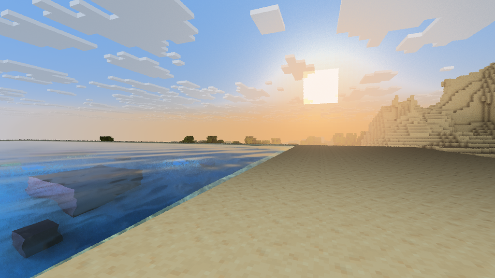

Minecraft Java Edition · Vulkan
Ray tracing for Minecraft
Bedray adds ray-traced lighting, a path tracer, and temporal upscaling to Minecraft’s native Vulkan renderer.
Minecraft 26.3 · Fabric or NeoForge · Windows x64

Early alpha
Use a separate game instance. The feature matrix records the evidence for each mode. Live validation of the experimental DLSS 5 Neural Rendering path on RTX hardware is pending.
Documentation
Play and configure
Краткая инструкция
Создайте отдельный экземпляр Minecraft 26.3 с Fabric или NeoForge. Установите Sodium 0.9.x и JAR Bedray для выбранного загрузчика. Для трассировки скопируйте bedray_core.dll из той же сборки в bedray/natives/. Параметры Bedray доступны в настройках графики.
Подробные инструкции на английском доступны в разделе «Документация». Bedray находится в ранней альфе. Проверка DLSS 5 в игре на RTX ещё предстоит.